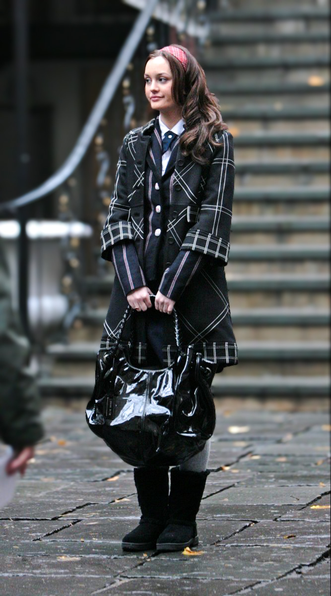
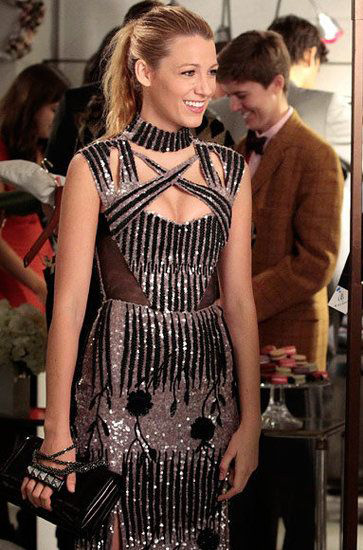
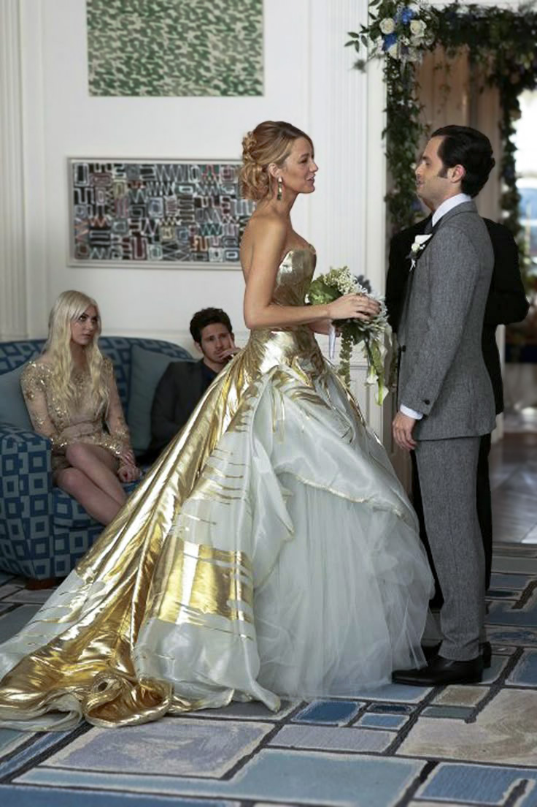
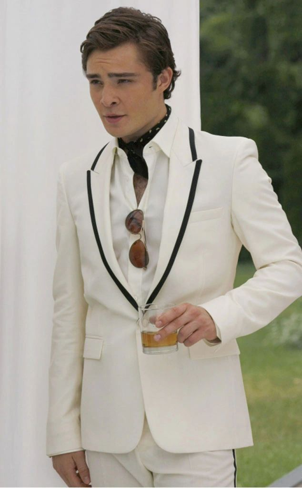
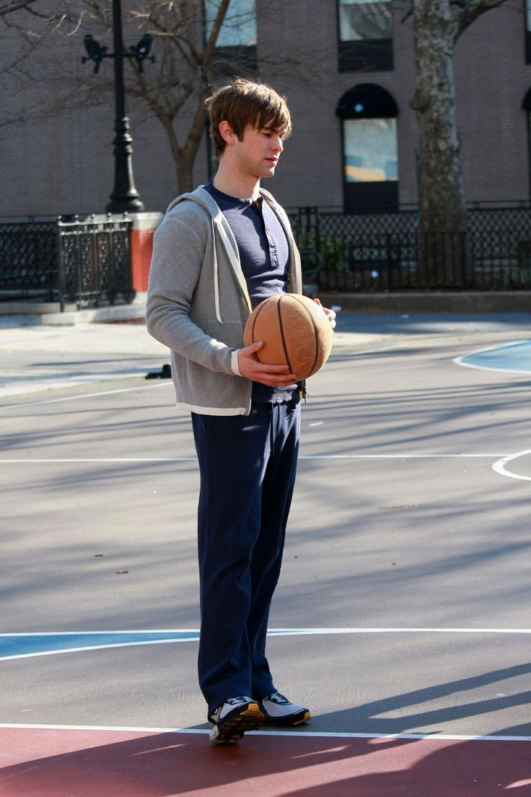
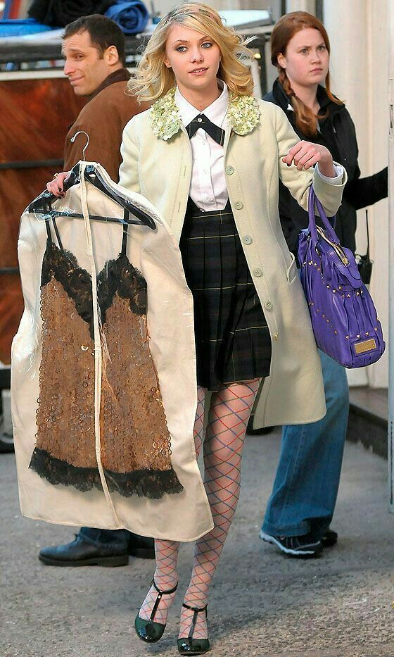
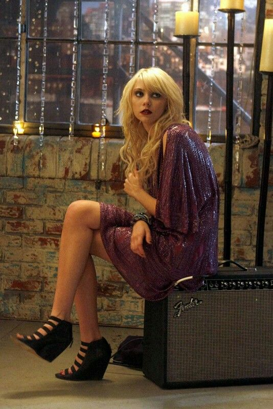

¿QUIÉN ES?: Blair Cornelia Waldorf, es uno de los personajes principales de Gossip Girl. Es una chica malvada, inteligente, manipuladora y decidida que sabe lo que quiere y que usa todos los recursos a su favor para lograrlo, así dañe a sus amigos de por medio, maneja una relación muy toxica junto a su mejor amiga Serena Van Der Woodsen.
Outfits:
1. Uniforme Constance con diadema roja

2. Vestido con abrigo verde y amarillo
3. Vestido de graduación
4. Vestido de flores en los Hamptons
5. Vestido rojo estación del tren
6. Conjunto navidad pista de hielo
7. Vestido de lunares
8. Vestido azul sesión de fotos
9. Vestido museo en París
10. Vestido azul boda con Chuck Bass
¿QUIÉN ES?: Serena Celia van der Woodsen es uno de los personajes principales de Gossip Girl. Es conocida por su belleza, carisma y estilo despreocupado que la hacen el centro de atención sin esforzarse demasiado. Aunque suele proyectar una imagen dulce y relajada, su vida está marcada por decisiones impulsivas, relaciones caóticas y un pasado oscuro que constantemente regresa para atormentarla. Su amistad con Blair Waldorf es profundamente tóxica y competitiva, llena de altibajos, traiciones y celos.
Outfits:
1. Vestido blanco hamptons
2. Vestido plateado Año Nuevo

3. Vestido dorado fluido
4. Vestido verde pasarela
5. Vestido tipo cintas
6. Vestido de boda

7. Vestido amarillo boda de Lily
8. Uniforme desarreglado
9. Abrigo con botas
10. Conjunto navideño
¿QUIÉN ES?: Charles "Chuck" Bass es uno de los personajes más complejos y oscuros de Gossip Girl. Hijo del magnate Bart Bass, Chuck es arrogante, manipulador y hedonista, acostumbrado a obtener lo que quiere sin importar las consecuencias. Aunque comienza como un personaje despreciable, su evolución lo lleva a enfrentar sus demonios internos, especialmente a través de su tormentosa pero intensa relación con Blair Waldorf. Su historia está llena de excesos, traumas y ambición.
Outfits:
1. Camisa azul e icónicos tirantes rojos
2. Traje gris con corbata guinda
3. Traje de blanco

4. Shorts y chaleco de rombos
5. Outfit para basket
6. Outfit casual de la estación de tren
7. Gabardina beige
8. Café con sombrero
9. Clásica bufanda de Bass
10. Traje de negocios 
¿QUIÉN ES?: Nathaniel "Nate" Archibald es el chico dorado del Upper East Side: guapo, educado y proveniente de una familia influyente. Sin embargo, detrás de su imagen perfecta, Nate está constantemente atrapado entre lo que se espera de él y lo que realmente quiere. Su personalidad pasiva y su indecisión lo convierten en un peón en los juegos de poder de sus amigos, especialmente de Blair y Serena, con quienes mantiene relaciones sentimentales complicadas y entrelazadas.
Outfits:
1. Smoking fiesta de graduación
2. Casual fiesta de blanco
3. Clásico suéter azul
4. Uniforme escolar
5. Traje plata
6. Casual de fiesta
7. Outfit para basket

8. Outfit clásico de Nate
9. Outfit invierno
10. Matching Outfit con Blair
¿QUIÉN ES?: Daniel "Dan" Humphrey es el forastero intelectual de Brooklyn que logra infiltrarse en el exclusivo mundo del Upper East Side. Criado con valores distintos a los de la élite, Dan se presenta como moralmente superior, aunque en realidad cae en las mismas trampas de manipulación y ambición que critica. Su obsesión con Serena y su necesidad de ser aceptado lo llevan a tomar decisiones cuestionables, revelando una personalidad mucho más oscura y calculadora de lo que aparenta.
Outfits:
1. Uniforme escolar
2. Casual desaliñeado
3. Casual con Blair
4. Dan teatral
5. Gabardina negra con Blair
6. Camisa a cuadros del chico solitario
7. Dan universitario
8. Gabardina guinda y flores
9. Aeropuerto
10. Fiesta de blanco
¿QUIÉN ES?: Jennifer "Jenny" Humphrey es la hermana menor de Dan, una adolescente ambiciosa que sueña con encajar en el mundo glamuroso de la élite neoyorquina. Aunque al principio es ingenua y dulce, Jenny pronto adopta comportamientos manipuladores, traicioneros y destructivos con tal de escalar socialmente. Su transformación la convierte en una versión joven y peligrosa de Blair Waldorf, lo que termina por alejarla incluso de su propia familia.
Outfits:
1. Jenny haciendo favores

2. Gabardina amarilla
3. Pinky Jenny
4. Uniforme escolar
5. Vestido de rayyas y moño 
6. Vestido morado de fiesta

7. Fiesta de blanco
8. Jenny con sus diseños
9. Jenny debutante
10. Vestido rosa con bordado
¿QUIÉN ES?: Lillian "Lily" van der Woodsen es la madre de Serena y una figura emblemática del Upper East Side. Educada, elegante y con un pasado bohemio, Lily representa la constante lucha entre el deber social y los sentimientos personales. A pesar de intentar mantener una imagen intachable, sus múltiples matrimonios, secretos del pasado y decisiones cuestionables la muestran como una mujer que, aunque busca proteger a su familia, muchas veces actúa por conveniencia.
Outfits:
1. Vestido negro cuello irregular 
2. Vestido boda de jardín 
3. Casual playera de rombos
4. Vestido lila
5. Outfit casual newyorkino
6. Vestido blanco con estampado negro
7. Vestido rojo
8. Vestido negro elegante
9. Vestido de glitter
10. Vestido de boda

¿QUIÉN ES?: Rufus Humphrey es el padre de Dan y Jenny, un exmúsico de rock que representa los valores bohemios y alternativos de Brooklyn. Aunque en un inicio es presentado como una figura paternal comprensiva y moral, su implicación con Lily van der Woodsen y su retorno a un estilo de vida más acomodado ponen en duda su integridad. Rufus intenta mantener a sus hijos alejados de la corrupción del Upper East Side, sin darse cuenta de que él también termina atrapado en ella.
Outfits:
1. 
2. 
3. 
4. 
5. 
6. 
7. 
8. 
9. 
10. 

¿QUIÉN ES?: Georgina Sparks es uno de los personajes más caóticos y destructivos de Gossip Girl. Astuta, impredecible y sin remordimientos, Georgina aparece constantemente para sembrar el caos y vengarse de aquellos que alguna vez la traicionaron. Su presencia siempre implica problemas, manipulaciones y secretos revelados, convirtiéndola en una amenaza constante para la tranquilidad de los protagonistas.
Outfits:
1. 
2. 
3. 
4. 
5. 
6. 
7. 
8. 
9. 
10. 

¿QUIÉN ES?: Dorota Kishlovsky es la leal y entrañable empleada doméstica de Blair Waldorf, pero su papel va mucho más allá del de una simple sirvienta. Es una figura maternal, consejera y cómplice incondicional de Blair, ayudándola tanto en sus intrigas como en sus momentos más vulnerables. Aunque a menudo es subestimada, Dorota posee una gran inteligencia emocional y una firmeza que la hacen indispensable en el universo de Gossip Girl.
Outfits:
1. 
2. 
3. 
4. 
5. 
6. 
7. 
8. 
9.